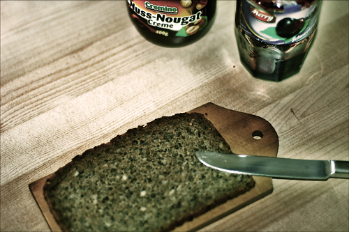
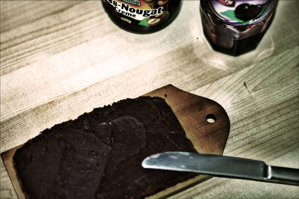
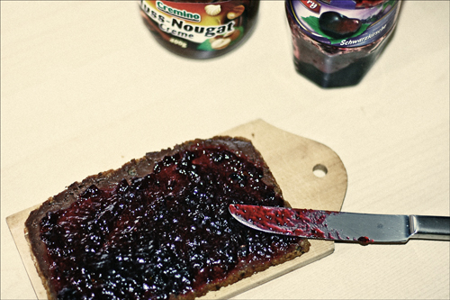

Das Schwarzwälderkirsch-Brot
Okay Leute, bindet euch die Schürzen um und schaltet den Rauchmelder aus - auf Phase 5 wird mal wieder gekocht! Nach dem überragenden Erfolg des Sprottenbrots folgt nun das 'Schwarzwälderkirsch-Brot'. An Zutaten wird folgendes gebraucht:
- Brot (am besten das gute Multikorn),
- Nuss-Nougat-Aufstrich
- und adäquate Kirsch-Konfitüre.
Ansonsten benötigt wird noch ein Brettchen, ein Messer zum Verstreichen der Ingredenzien und ein bißchen Geschick.
1. Wir nehmen eine Scheibe des guten Multikornbrots und richten sie mittig auf unserem Brettchen aus. Idealerweise ist das Brettchen größer als die Brotscheibe und kleiner als der sich darunter befindliche Tisch.

2. Als nächstes beginnen wir mit dem Schmiermesser Nuss-Nougat-Aufstrich an die Brotscheibe zu schmieren. Wir sind fertig, wenn die Scheibe einen einseitigen, homogenen Nuss-Nougat-Bestrich aufweist.

3. Als nächsten streichen wir die Kirsch-Konfitüre direkt auf den Nuss-Nougat-Aufstrich. Es ist dabei darauf zu achten, dass der Kirschkonfitürenüberzug gleichmäßig über die ganze Scheibe verteilt wird. Je mehr Mühe wir uns jetzt geben, desto schmackhafter wird das Endergebnis.

So, das war es auch schon. Ich wünsche einen guten Appetit!
7 Kommentare zu "Das Schwarzwälderkirsch-Brot"
- Externe Links im selben Fenster öffnen
- Externe Links in neuem Fenster öffnen
Lex Dildo
Alter! Wo ist die Cream? Also dies weiße Zeug dazwischen. nd überhaupt. Schoko gehört nach oben.
Herschel Rubinstein
cream? total ungesund. und hast du schonmal versucht nutella auf kirschkonfitüre zu verschmieren?
magnus
Schon nach Schritt Nummer 1 sollte die Hand des Diabetikers nach der Spritze zucken. Das helle Licht am Ende des Tunnels wird er wohl nur erblicken wenn er Schritt Nummer 3 vollendet hat. Deine Kreationen sind nicht sehr vielfältig lieber Herschel. Erinnern wir uns bitte mal an das Kirschmarmeladen-Brot mit Hagelslag(http://nl.wikipedia.org/wiki/Hagelslag)!!! und was soll hier überhaupt der Scheiss mit dem Vollkornbrot? Soll das die Legitimation für die Völlerei sein? Ist zwar süss aber gesund?
crucible
Oha! Das erinnert mich daran, als ich in syrischen Gefängnissen zum Pfennig-Skat gezwungen wurde. Da gab es das auch immer!
Herschel Rubinstein
@magnus: ich bitte dich, das kischmarmeladenbrot mit hagelslag ist in sich falsch, da marmelade nur aus zitrusfrüchten gemacht werden kann. außerdem bin ich dem leser damals die zubereitung schuldig geblieben, was ich nun endlich nachgeholt habe.
außerdem, zum thema multikorn: dies ist sicher kein freifahrtschein zur völlerei, aber wir erinnern uns - im gegensatz zum weißbrot ist es nahrhaft und sättigend. man muss also kein schlechtes gewissen haben, wenn man mal eine scheibe mehr isst
@crucible: mein gott! pfennig-skat? das ist unmenschlich!!
jeres mad sutter
jeg syntes at jerees mad vaner er noget af det mest ulà¦kre der findes pॠdenne side af kloden. det ser da sॠulà¦kkert ud at man kunne brà¦kke sig pॠstedet. jeg ville hellere spise en snegl lagt tis i tre à¥r.
hilsen Deutsh Hater
Herschel Rubinstein
sorry, my dutch isn't that good.